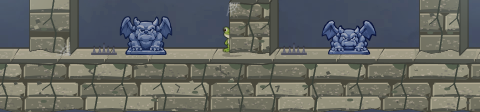
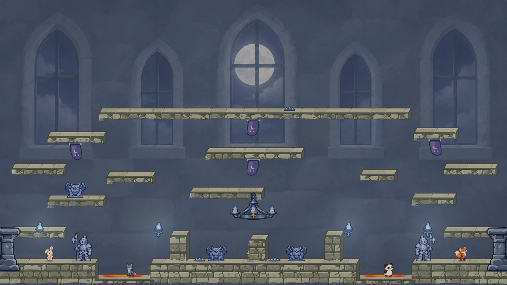
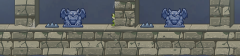
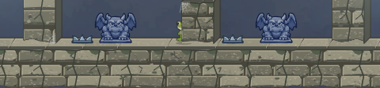

Current

Five thin points disappear into the stone.
Same 28 × 12 hitbox and Castle scene in every capture. The enlarged strips are display-scaled for inspection; judge the danger cue in the full 1280 × 720 scene too. Guardian and other approved art remain fixed.

Five thin points disappear into the stone.


Recommended: unequal curved teeth give the clearest hazard shape.

More Castle character, softer danger cue.
Architectural, but reads less sharply as a hazard.